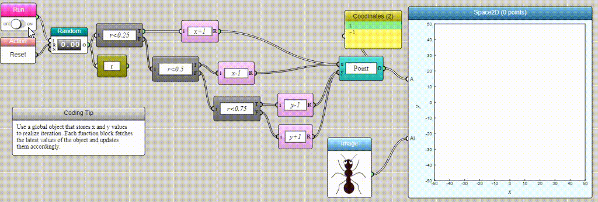

iFlow
Make computational thinking visible. iFlow is a no-code environment for graphically constructing solutions to problems in math, science, and engineering — so learners can focus on the thinking, not the syntax.
Programming without code
iFlow is a conceptual programming environment for graphically constructing computational solutions to math, science, and engineering problems in a no-code fashion. It lets users focus on the computational and disciplinary nature of the problems in hand, without having to learn any specific programming language.
Like flowcharts, iFlow models a program as a directed graph depicting the logic structure of a computational system and the interactions among its constituents. Unlike flowcharts, nodes and arcs in iFlow are actually functional — they generate computational results.
The biggest thing is that iFlow is the most straightforward [compared with Python]. If there's anything that you're not understanding, you are able to just see it.
Code vs. iFlow
To illustrate the point, compare JavaScript and iFlow for making a simulation of a two-dimensional random walk.
JavaScript — a line-by-line structure of interpretable code
let i = 0 let r while (i < 5000) { r = Math.random() if (r < 1/4) { x = x + 1 } else if (r < 2/4) { x = x - 1 } else if (r < 3/4) { y = y + 1 } else { y = y - 1 } drawPointAt(x, y) i++ } // incomplete — no visualization of the result
iFlow — a graph-based structure of actionable nodes and arcs

With iFlow, users can create a computational solution, observe its execution, and see the result without writing a single line of code. Computational tasks such as physics simulations, biological evolution, and machine learning can be encapsulated into system-provided or user-defined blocks with input and output ports — making them as simple to use as configuring with a graphical interface and connecting them with other blocks.
This philosophy echoes the no-code movement: empower people to build apps without coding, unlocking their creative potential and inviting more into the software workforce — regardless of prior programming experience.